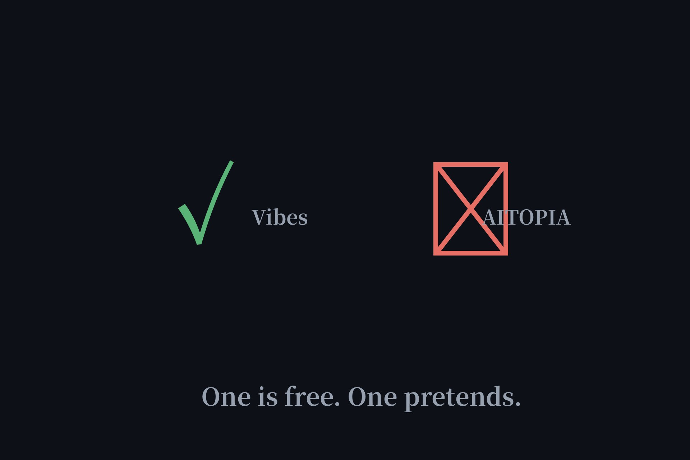

Free AI Video Agent Generators: One Is Free, One Pretends (2026)
"Free AI agent video generator" is a search full of promises, so we picked the two loudest — Meta's Vibes and AITOPIA's "powered by Sora 2, Veo 3, Kling AI" — and read the official docs and terms. One is genuinely free. The other's "free" is fiction, and its flagship model doesn't even exist on the platform.

| Meta Vibes | AITOPIA | |
|---|---|---|
| Actually free? | Yes — no subscription, no payment | No — "free" = free registration only |
| Account needed? | Meta account | Account + paid plan to generate |
| Price to generate | $0 | $7.99–$118.99/mo in credits |
| Sora 2 as advertised? | — | Unavailable, even paid |
Meta Vibes: the real one
Vibes is Meta's AI-video feed inside the Meta AI app — create short-form AI videos, share them to the feed, message friends, or cross-post to Instagram. The official FAQ confirms it plainly: no subscription or payment needed. The price is the usual Meta one: you need a Meta account (no anonymous mode), your conversations are used to improve their AI, content gets labeled as AI-generated, and availability varies by region. Free, but you're in Meta's house now. For video, that's the best deal currently on the table — every other provider we checked gates generation behind credits.
AITOPIA: the pretend one
AITOPIA's landing page advertises "powered by Sora 2, Veo 3, Kling AI & more" and "free." The pricing page tells another story: there is no free tier at all — five paid plans from $7.99 to $118.99 a month, every generation billed in credits (roughly 8 short Kling clips on the cheapest plan). Worse, the Sora 2 it advertises doesn't exist on the platform: its model pages return "Model Unavailable." And the terms are hostile — auto-renewal, no refunds on monthly plans, credits forfeited if you cancel, and a perpetual license letting the company use your inputs and outputs to train AI models. "Free" here means you can create an account for free. That's it.
Why video is different
Video is the most expensive AI workload to serve — orders of magnitude costlier than chat — which is why no-signup free video agents effectively don't exist. Every provider gates it: Meta behind an account, everyone else behind credits. If you see "free AI video generator, no sign-up," apply our four-meanings-of-free test before believing it. The honest ones say "free with account" on the landing page, not in paragraph 14 of the terms.
FAQ
Is Meta Vibes really free for AI video generation?
Yes. Meta's official FAQ confirms no subscription or payment is needed to generate AI videos with Vibes. You do need a Meta account, and your conversations are used to improve Meta's AI.
Is AITOPIA's AI video generator free?
No. "Free" only means free registration — all generation costs credits, which are only available through paid plans ($7.99–$118.99/month). Its advertised Sora 2 model is also unavailable, even paid.
Is there a free AI video agent with no sign-up?
Not among the current options. Video generation is the most expensive AI workload to serve, so every provider gates it behind an account. Meta Vibes is the closest to free — a Meta account, but no payment.